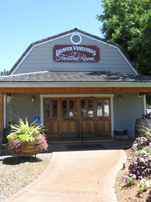

|
North America >
USA >
California >
Amador County >
Deaver Vineyards

Deaver Vineyards
Plymouth, CA
No Tasting Fee.
www.deavervineyard.com
One of the older wineries in the Shenandoah Valley, Deaver produces a selection of still wines and ports.
Vintages:
Sierra Foothills Chardonnay with an Attitude
2007
Sauvignon Blanc Amador County
2008
Sangio Rose
NV
Barbera Amador County
2005
Zinfandel Amador County
2006
Ten Zins Amador County
2006
Deaver's Blend Amador County
NV
Orange Muscat Port Sierra Foothills
NV
Syrah Port Amador County
2005
Merlot Port California
NV
Zinfandel Port
NV
California Port
NV
|